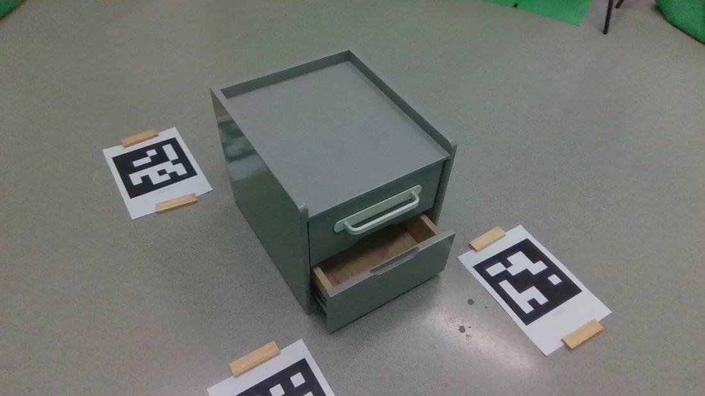
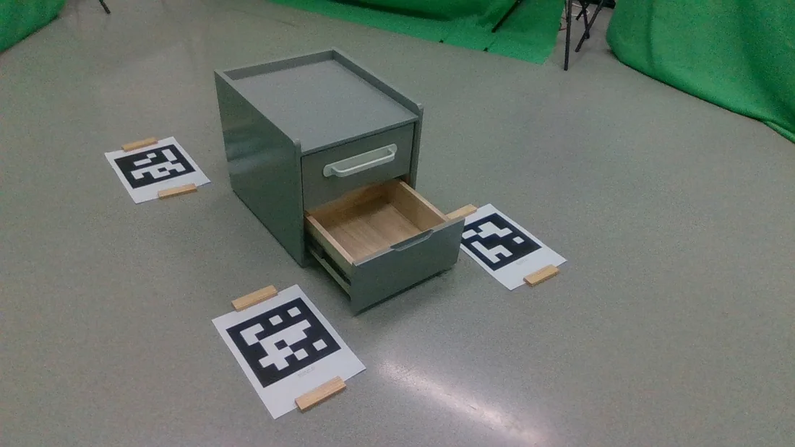
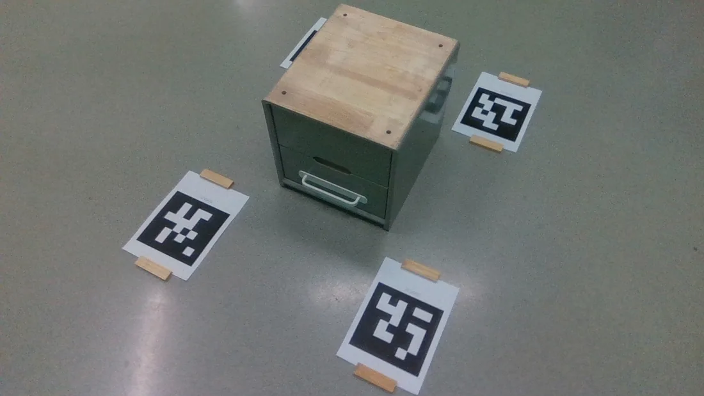
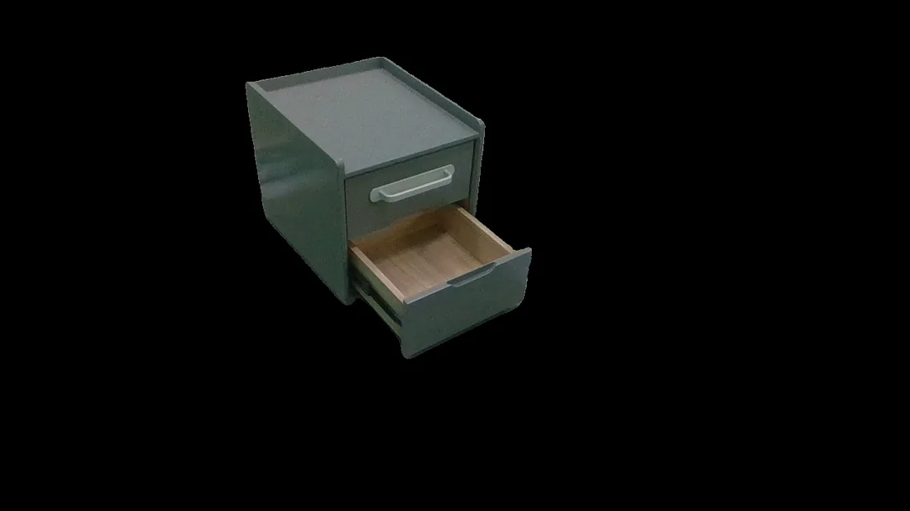
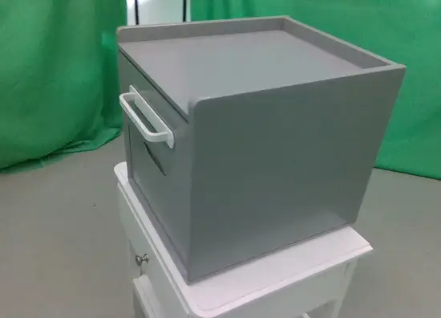
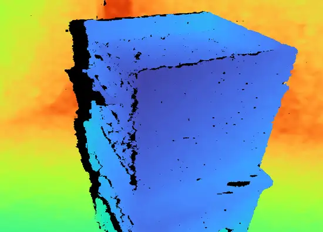

01
Articulation States


Anonymous Authors
01 / THE DATA
Section 1: Start and end states, supplemental views, and object masks from real-world captures.




02 / INSTANCE EXPLORER
Section 2: Explore each object's captures, interactions, USD asset motion, and physical properties.
03 / INTERACTION
Section 3: Aligned RGB and depth sequences show real-world articulated motion.


Section 4: We use an optical–inertial motion capture system to record the joint trajectories of real-world objects. We compare these recordings with the joint motion of their corresponding articulated digital twins to evaluate differences between simulated and real-world joint behavior.
Section 5: Compare ArtModeling assets with Astra reconstructions from 30 and 240 images.
Section 6: Inspect USD joints, preview motion, and edit physical properties with the bundled local Python service.
Explore joint drives, motion limits, mass, friction, and gravity.
Download sample USD models ↗